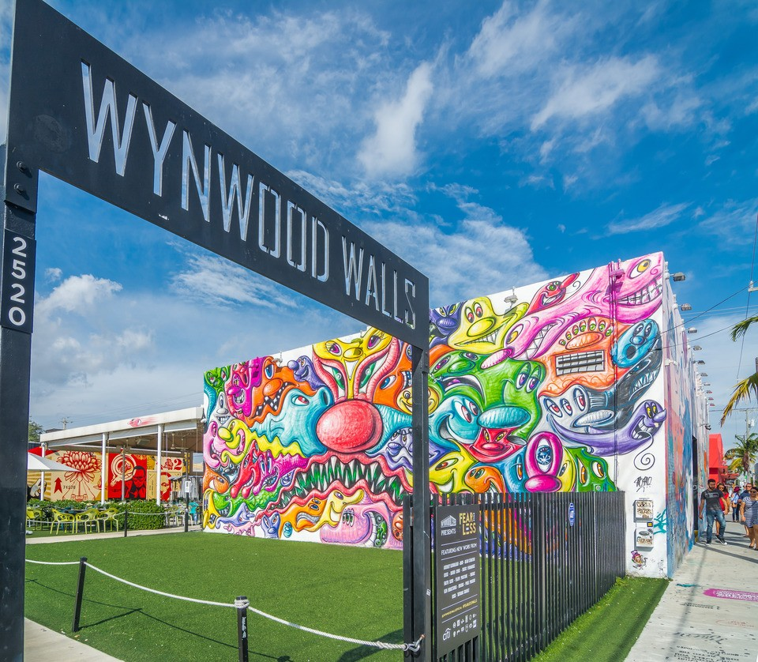
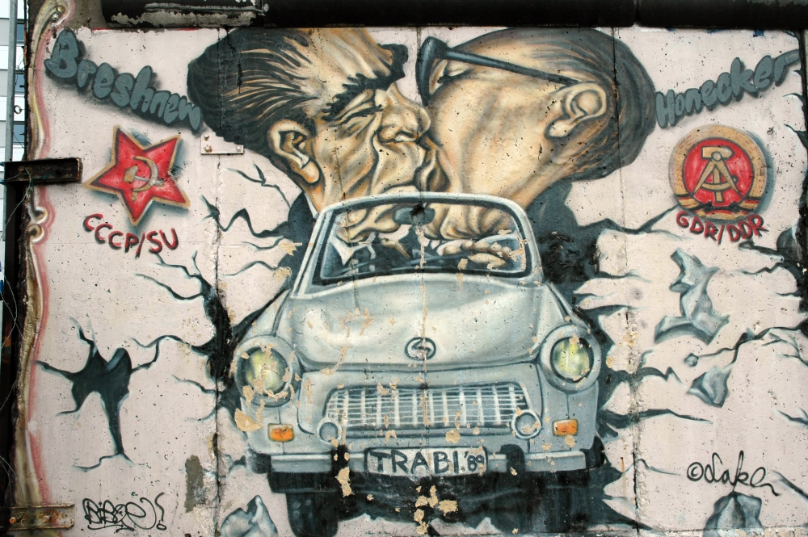
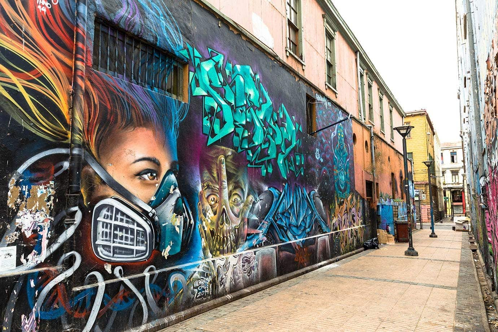

Welcome to Street Art Spotlight, where the vibrant and dynamic world of street art takes center stage. Immerse yourself in the creativity of top-tier street artists as we showcase mesmerizing artworks from different corners of the globe. Each piece tells a unique story, conveying powerful messages of freedom, unity, and social change.
Hover over each image to discover additional information about these captivating street art masterpieces. Join us on this visual odyssey celebrating the global tapestry of street art and the stories it weaves into the fabric of our cities.
Wynwood Walls - Miami, USA

Discover Wynwood Walls, an outdoor gallery showcasing the work of top-tier street artists. Immerse yourself in the vibrant and dynamic art scene of Miami's Wynwood Arts District.
Berlin Wall - Berlin, Germany

Explore the East Side Gallery along the Berlin Wall, where historical remnants meet contemporary street art. The murals here convey powerful messages of freedom, unity, and social change.
Valparaíso - Chile

Experience the enchanting street art of Valparaíso, Chile. This UNESCO World Heritage Site transforms its hillsides into a canvas of color and creativity, capturing the spirit of cultural diversity.